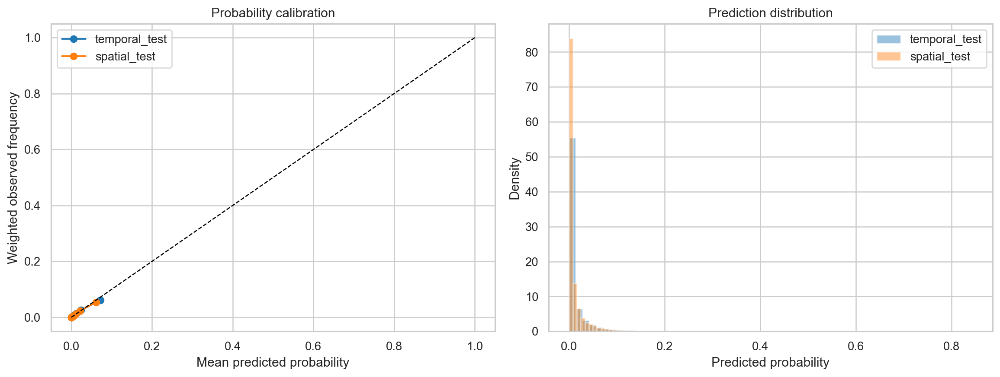
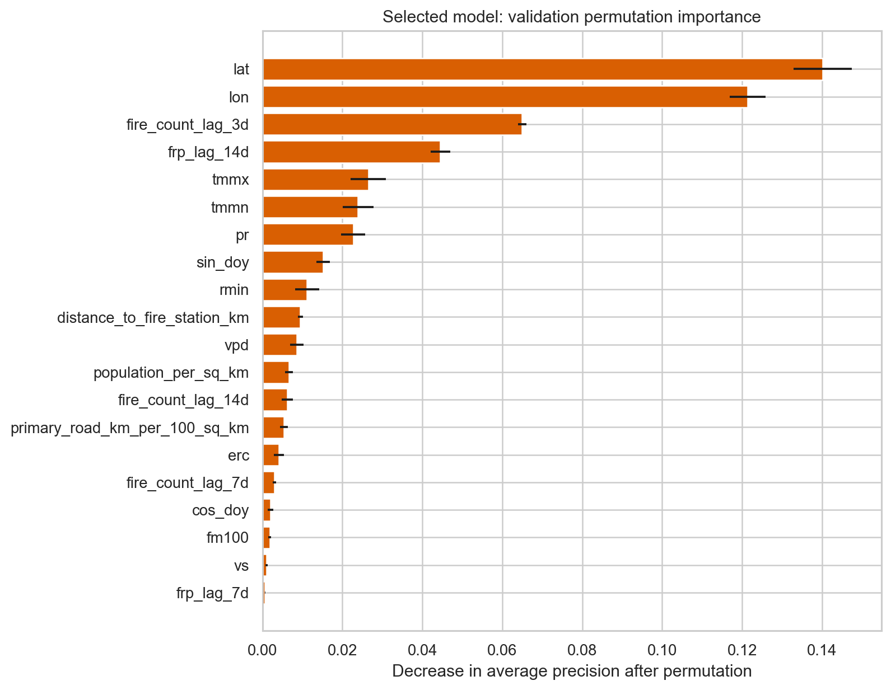
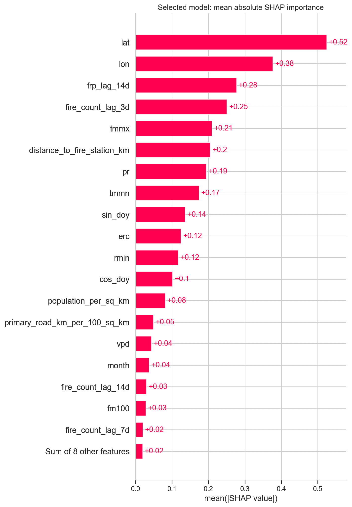
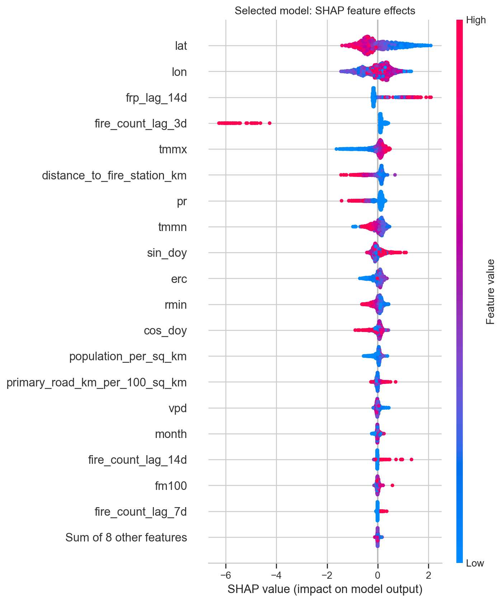

01 · What the model predicts
The target, precisely
Every modeling choice below follows from one deliberately narrow definition of "risk." Getting this exact wording right matters more than any metric on this page.
Target definition (quoted from the notebook)
The label is a new MODIS vegetation-fire hotspot candidate on the next day, in a given 0.25°×0.25° grid cell (roughly 17 miles/28 km across), after that cell has gone more than three consecutive days without a detection. It is not a guaranteed wildfire, a property-level risk, a fire-spread prediction, or an emergency warning — it is a same-day satellite-detectability signal, one step ahead.
- Geography: continental United States (bounded by GridMET's own coverage)
- Resolution: 0.25° grid cells, 1-day-ahead horizon
- Training window: 2020–2023, calibrated on 2024, tested on 2025–2026
Why case-control sampling
New ignitions after a quiet spell are rare — well under 1% of all
grid-cell-days. Training directly on that raw imbalance wastes most of
a training pass on cells that never come close to igniting. The
notebook instead builds a case-control sample: it keeps every
positive (actual ignition) day and draws a much smaller, weighted
sample of negative (quiet) days, then restores the true population
rate at evaluation time with a sampling_weight column.
The sampled training data shows roughly 17.3% positives, but the
weights correctly imply a true nationwide prevalence of only about
0.6–0.7% — every held-out metric on this page is
computed on that reweighted, population-correct basis, not the raw
sampled rate.
02 · Features
25 features, five families
The model never sees a satellite image directly — it sees a row of 25 numbers per grid-cell-day, grouped here by what they describe.
tmmx/tmmn (max/min temperature), pr (precipitation), vs (wind speed), rmin (minimum humidity), vpd (vapor pressure deficit), erc (energy release component — a standard fire-danger index), fm100 (100-hour dead fuel moisture). All from GridMET.
month, plus sin_doy/cos_doy — day-of-year encoded on a circle so December 31st and January 1st read as neighbors, not as opposite ends of a number line.
Fire count and fire radiative power (frp), each looking back 1, 3, 7, and 14 days — whether this cell (or its recent past) has been actively burning nearby.
population_per_sq_km, log_population_density, primary_road_km_per_100_sq_km, distance_to_fire_station_km — people, roads, and emergency response reach.
lat, lon — where the cell is. Deliberately tested in isolation below, since location alone can quietly encode "this is just a fire-prone place" without any real signal.
How the model was validated
Rather than a random row-by-row split — which would let the model
"cheat" by seeing a cell's neighbors in training — each grid cell
is assigned to a spatial block using a SHA-256 hash of its coordinates
(stable_spatial_holdout), then whole blocks, not
individual rows, are held out. Combined with a calendar-year split,
this produces three genuinely independent evaluation sets:
03 · Models compared
18 candidates, one winner
The notebook trains three model families — a gradient-boosted
tree ensemble (hist_gradient_boosting), extremely
randomized trees (extra_trees), and a random forest
(random_forest) — against each of the three feature
strategies (full, no_coordinates,
conditions_only), each calibrated two ways (Platt/sigmoid
and isotonic regression), for 18 total candidates. Every candidate is
ranked by PR AUC (precision-recall area under the curve) on the
calibration split — the right metric here, since ROC AUC is easy
to inflate when positives are this rare.
The winner — hist_gradient_boosting, full feature set, sigmoid calibration — is only marginally ahead of the next few candidates. What matters more than the exact ranking is that gradient boosting on the full feature set beats every coordinate-restricted or alternative-algorithm candidate, consistently, across both calibration methods.
04 · Results
How well does the winning model actually do?
Real project resultsEvery metric, on every held-out split
Performance degrades gracefully from the easiest split (calibration, same years and places seen in spirit during training) to the hardest (spatial_test, both a later year and spatial blocks never seen in training) — the honest signature of a model that isn't overfitting to one place or one season.
Two ways to operate the model
A calibrated probability isn't a decision by itself — it needs a threshold. The notebook reports two named operating points: chase 80% recall (catch most real ignitions, accept a larger watchlist), or work within a fixed 5% alert budget (only ever flag the riskiest 5% of cell-days, whatever recall that buys you).
05 · Feature importance & explainability
What is the model actually using?
Two independent methods — permutation importance (how much shuffling one column hurts held-out PR AUC) and SHAP (how much each feature pushes an individual prediction up or down) — are cross- checked against each other, plus a direct ablation test of location alone.




Top 10 by permutation importance
Top 10 by mean |SHAP value|
Does location alone explain the model?
A coordinate-ablation test: how much predictive power comes from lat/lon vs. actual fire-weather and activity signals.
06 · Uncertainty & risk bands
Held-out performance, with uncertainty
Bootstrap 95% confidence intervals from resampling whole calendar dates, not individual rows — a stricter, more honest uncertainty estimate, computed on the temporal_test split.
From probability to risk band
The calibrated probability is finally binned into five discrete risk bands using quantiles of the 2024 calibration-year probability distribution — the same bands used for the address-lookup map on the prediction-model page.
07 · Limitations & next steps